阶段二 · 输入与输出 ｜ 难度：★★★☆☆ ｜ 预计用时：45–60 分钟
本课材料：ESP32 开发板 ×1、USB 线 ×1、面包板、电位器（10kΩ 三脚旋钮）×1、杜邦线 3 根 无硬件替代：Wokwi 模拟器加
Potentiometer元件，代码完全相同

你将做出：手指转动旋钮，面包板上的 LED 从全灭平滑亮到全亮——旋钮就是你的调光台。 同时串口监视器里 0–4095 的数字随手指跳动。
上一课的亮度是代码里写死的三角波；这一课，物理世界的连续量（旋转角度）第一次流进程序，再由程序驱动另一个连续量（亮度）。输入连续 + 输出连续 = 真正的"模拟闭环"。
本课学习目标（完成后你将拥有）：
analogRead()、12 位分辨率（0–4095）与 map() 映射delay第 3 课的呼吸灯，亮度公式是 brightness += step——节奏、行程全由程序员决定。但真实世界里，控制量来自外面：温度多高、声音多大、旋钮拧到哪。
要接住这些量，芯片需要一种新能力：读连续电压。而 ESP32 的引脚天生只会读 0 和 1（第 2 课学的数字输入）。矛盾怎么解？
ADC（Analog-to-Digital Converter，模数转换器） 的思路和 PWM 正好相反：
PWM 用"快速开关"把数字时间平均成模拟感；ADC 用一把足够密的尺子把模拟电压量成数字。
真实电压（连续）: 0V ——————●—————————————— 3.3V
↑ 旋钮拧到这
ADC 读数（离散）: ┌──┬──┬──┬──┬──┬──┬──┬──┐ ESP32 把 0–3.3V
0 512 1024 ... 4095 切成 4096 个台阶
ESP32 的 ADC 是 12 位的——2¹² = 4096 级（0–4095）。比 Arduino Uno 的 10 位（0–1025…准确说是 0–1023）细腻 4 倍：
| 读数 | 对应电压（约） | 直观 |
|---|---|---|
| 0 | 0V | 旋钮拧到底（逆时针） |
| 2048 | 1.65V | 正中间 |
| 4095 | 3.3V | 拧到头（顺时针） |
⚠️ 分辨率 ≠ 精度：4096 级是"尺子的刻度数"，实际电压噪声会让读数在几个刻度间抖（第 6 课讲模拟引脚的坑时细算）。先记住换算公式：
电压 = 读数 ÷ 4095 × 3.3V
四步流水线：机械位置 → 分压电压 → 12 位数字 → 8 位亮度。每一步都是上一步的确定函数——这就是"传感"的本质。注意 ①② 只在两端有轻微非线性，入门先接受理想值。
电位器（Potentiometer）就是你台灯上的调光旋钮：一颗被旋钮刮着走的电阻。它有 3 个脚：
旋钮轴
↻
┌─────[R]─────┐ ← 整颗电阻（两端固定，比如 10kΩ）
│ ↑ │
脚1 滑动触点 脚3
（3.3V） (跟着旋钮跑) （GND）
│
脚2 ────→ 接 ESP32 引脚（读这里）
旋钮拧到底时触点贴着 3.3V 那端，读 4095；拧到另一头贴着 GND，读 0——机械位置被精确翻译成数字。这就是"分压（voltage divider）"：第 1 课水管比喻的"窄口分水压"，现在成了你的输入设备。
| 从 | 到 | 说明 |
|---|---|---|
| 电位器左脚 | ESP32 3V3 | 建立满量程上端 |
| 电位器中脚（滑动） | ESP32 GPIO34 | 模拟读数入口（⚠️ 第 1 课埋的雷！） |
| 电位器右脚 | ESP32 GND | 满量程下端 |
💡 注意这个精心安排：中脚我们故意接 GPIO34——第 1 课挑战里你把 LED 接 34 亮不了，第 6 课揭晓答案。现在提前让你摸到这颗雷的引信：GPIO34 是"仅输入"脚，不能输出，但拿来读模拟信号完全合法。同一个引脚，接 LED 是坑，接电位器是宝——第 6 课我们会把这类引脚的完整脾气一次算清。
Wokwi 方案：添加
Potentiometer，三脚分别接 3V3、GPIO34、GND。
analogRead() 与 map()int value = analogRead(34); // 读 GPIO34，返回 0–4095
一行，同步返回，不阻塞。但 0–4095 对人不友好，对 LED 也没直接用——LED 要的是 0–255。这时需要线性映射：
int brightness = map(value, 0, 4095, 0, 255);
map(x, 在哪开始, 到哪结束, 映射到哪开始, 映射到哪结束) ——把一个区间的数等比例搬到另一个区间：
map(0, 0, 4095, 0, 255) → 0 （拧到底，全灭）
map(2048, 0, 4095, 0, 255) → 127 （中间，半亮）
map(4095, 0, 4095, 0, 255) → 255 （拧到头，最亮）
📌
map()只是整数除法的简写，内部就是(x - in_min) * (out_max - out_min) / (out_max - in_min) + out_min。理解原理比背 API 重要——哪天要非线性映射（比如对数调光），你自己就能写出公式。
// ============================================
// 第 4 课：旋钮调光 —— ADC 输入 + PWM 输出
// ============================================
const int POT_PIN = 34; // 电位器中脚（GPIO34，仅输入）
const int LED_PIN = 4; // 外接 LED（沿用第 3 课接线）
unsigned long lastRead = 0; // 上次采样时刻（millis 非阻塞）
const unsigned long INTERVAL = 20; // 每 20ms 采样一次（50Hz）
void setup() {
pinMode(LED_PIN, OUTPUT);
Serial.begin(115200);
Serial.println("旋钮调光启动");
}
void loop() {
unsigned long now = millis();
if (now - lastRead >= INTERVAL) { // 到点采样，绝不 delay
lastRead = now;
int raw = analogRead(POT_PIN); // 0–4095 原始读数
int brightness = map(raw, 0, 4095, 0, 255);
analogWrite(LED_PIN, brightness); // 亮度立刻跟上
Serial.print("旋钮: ");
Serial.print(raw);
Serial.print(" 亮度: ");
Serial.println(brightness);
}
// 自由时间：第 3 课的呼吸逻辑、第 2 课的按钮，都可以塞这里
}
const int POT_PIN = 34;
第 1 课埋的雷，现在成了宝。注意它不需要 pinMode(INPUT)——analogRead 会自己配置方向，而且 GPIO34 本来就是仅输入脚。
unsigned long lastRead = 0; + INTERVAL = 20
采样也走 millis 节奏，全课零 delay。为什么是 20ms？旋钮是慢速机械量，每秒采 50 次绰绰有余；采太快只是浪费，采太慢会感觉"手快屏慢"。采样率要匹配信号的物理速度——这是数字信号处理的第一直觉。
int raw = analogRead(POT_PIN);
拿到 0–4095。叫 raw（原始值）是工程习惯：原始数据和加工后的数据分开存，调试时才能对照"传感器到底给了我什么"。
map(raw, 0, 4095, 0, 255)
量程搬移。注意这里假设了理想线性——实际 ADC 两端有轻微非线性（第 6 课的坑之一），入门先接受。
analogWrite(LED_PIN, brightness);
输入的连续量 → 输出的连续量。第 3 课你让亮度动起来，第 4 课你让"动"由手决定——控制环闭上了。
Serial.print 分行打印
与 println 的区别：print 不换行，拼完一整行再 println 换行。串口打印从此有了"格式"。
把第 3 课的呼吸逻辑塞进 // 自由时间处，用旋钮控制呼吸速度——两个 millis 定时器并行，互不干扰：
// 在 loop() 的自由时间处加入（INTERVAL 之外的第二个定时器）：
// 旋钮越靠右，呼吸越快
int speed = map(analogRead(POT_PIN), 0, 4095, 40, 4); // 每档 4–40ms
// ↑ 注意：这里直接读也可以，但正式代码建议同样用 millis 节奏管理
两个定时器并行 = 多任务的雏形。第 10 课你会看到：当任务涨到三个、五个，手写 if 会失控——那时再引入任务调度的思想。现在先体会：millis 结构天然支持"多条时间线并行"，delay 结构天生做不到。
旋钮: 0~4095 亮度: 0~255，数值随旋钮连续变化全部打勾 → 你打通了"模拟进 → 数字处理 → 模拟出"的完整链路。进入第 5 课。
raw / 4095.0 * 3.3（注意用浮点数），拧到中间看是不是约 1.65V。analogRead(25)——记录读数是全 0、乱跳还是正常。把现象记进笔记本：ADC2（GPIO25 属于 ADC2）的坑，第 6 课清算引脚、第 11 课开 Wi-Fi 时我们会两次回收它。| 现象 / 报错关键词 | 原因 | 解决办法 |
|---|---|---|
| 读数恒为 0 | ① 中脚没接对（接到 GND 或空接）② 接到了非 ADC 引脚 | 核对中脚 → GPIO34；浮空的 analogRead 读数不可信 |
| 读数恒为 4095 或卡死不动 | 中脚接到了 3V3，或旋钮接线脚序反了 | 中脚应该是滑动触点；左右脚才是 3V3/GND |
| 读数乱跳幅度大（±50 以上） | 正常噪声 + 面包板接触不良 | 插紧杜邦线；读数小幅抖动属正常（滤波是第 6 课话题） |
| LED 不亮但串口数值正常变化 | LED 回路问题（引脚/电阻/极性） | 回查第 2 课接线表：GPIO4 → 220Ω → LED → GND |
| 亮度变化"一段一段"不连续 | map 用了整数除法的固有台阶 | 属正常（256 级对肉眼足够）；追求平滑可加几行滤波，第 6 课讲 |
analogRead 返回值全乱或为 0（接 GPIO25/26） |
ADC2 与 Wi-Fi 冲突的前兆 | 本课请用 ADC1 引脚（32–39）；完整原理第 6 课、第 11 课揭晓 |
| 编译报错引脚号 34 不能 OUTPUT | 把 34 也写了 pinMode(OUTPUT) | GPIO34 仅输入——第 1 课埋的雷，第 6 课拆解 |
旋钮控制了亮度，但旋钮和灯还连在同一块板子上——它们的"对话"是芯片自言自语。第 5 课：串口通信与共地：你会把 ESP32 的 TX/RX 两根线接到另一个设备上（或电脑的真正串口视角），第一次让两颗芯片互相说话。第 1 课 GND 词条里那句"共地是一切通讯的前提"将在本课被深刻体会——你会亲手验证：忘了接 GND，数据就是一锅乱码。
本课程系列：从点亮一盏灯，到设计一台会自己思考的机器。